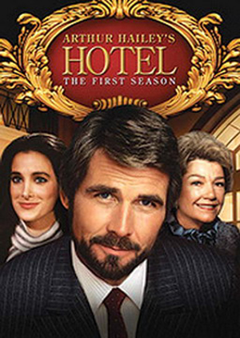
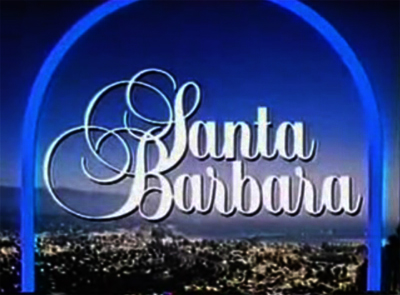

Сериалы восьмидесятых
В моду входят детективные сериалы ("Она написала убийство") и всевозможные сериалы про полицию. Положительные герои все так же борются со злом, но конфликты, ситуации и характеры становятся сложнее, начинают выходить за рамки шаблонности. Драматические сериалы начинают свое движение к первым местам в рейтинге.
Отель (англ. Hotel) – американский драматический телесериал, созданный Аароном Спеллингом с Джеймсом Бролином, Конни Селлекка и Энн Бакстер в главных ролях, который транслировался на канале ABC с 21 сентября 1983 по 5 мая 1988 года. Сериал был основан на одноименном романе 1965 года Артура Хейли.
Действие сериала разворачивалось в одном отеле, которым управляла богатая аристократка Виктория Кэбот, а ей помогал Питер Макдермотт, у которого были отношения с Кристин Фрэнсис.
Из-за концепции сериала, которая заключалась в том, что в центре каждого эпизода находилась история одного из постояльцев, гостей или персонала отеля, проект привлекал на эти роли крупных звезд, также как и другой хитовый сериал канала ABC того периода – ситком «Лодка любви». Однако «Отель» затрагивал более серьёзные и спорные темы, такие, как аборты, неверность, изнасилования, самоубийства, супружеское насилие и другие социальные проблемы, существующие в обществе.
Стоит отметить так же сериал этого десятилетия, который впоследствии был очень популярен в России и во многих странах мира, – «Санта-Барбара» (англ. Santa Barbara), хотя в США и не снискал такой сверхъестественной популярности.
«Санта-Барбара» (англ. Santa Barbara) – дневная мыльная опера, транслировавшаяся в США с 30 июля 1984 года по 15 января 1993 года на канале NBC. Всего снято 2137 серий.
Сериал рассказывал о потрясающей и полной событий жизни богатой семьи Кэпвеллов из города Санта-Барбара. Помимо Кэпвеллов, также присутствовали и другие семьи: менее обеспеченные Андраде и Перкинсов, которые сталкивались с похожими проблемами, а так же соперничавшие с Кэпвеллами Локриджи.